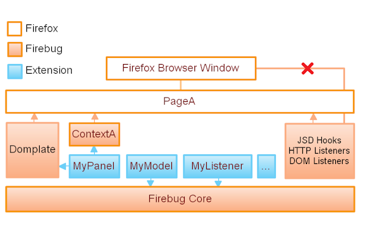

Extension Points
User Interface
Tabs
Toolbar buttons, context menus
Custom logging
Internals
Events (init, shutdown, ...)
Listeners (network monitor, console, ...)
Extension Architecture
Page Oriented

Extension Improvements
More extension points
Support for UI (HTML) rich UI repository
Integration points for existing IDEs
Integration with web-services
Firebug Extensions
YSlow
Performance analyzer
Chromebug
Firebug for Firefox extensions
Firecookie
for easy access to cookie information
FirePHP
to integrating server-provided PHP debugging information with the Firebug UI
Pixel Perfect
for overlaying mock-ups on top of the real thing to ensure you've got a good implementation
Rainbow
for JavaScript syntax highlighting
...
http://www.softwareishard.com/blog/firebug/list-of-firebug-extensions/